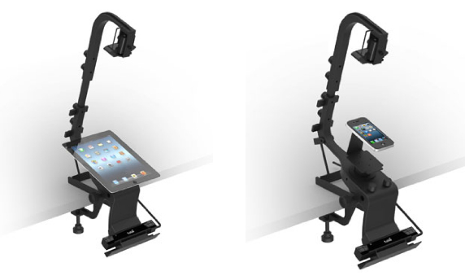

Mobile Streaming Advertisements
Dr. Chen-Chao Tao
Yu-Yin Shen, Daniel Wei, Wright Lin, Jenny Tseng, Alley Lin, Ting-Yu Lin

Research Purpose
Native ads nowadays play a big part in our daily life and affect our purchasing decision making or marketing strategy more than we imagined. In this study, our client, Yahoo, was curious about which kind of native ad can bring them the best marketing effectiveness. We compared 3 different kinds of native ads, which were: static image ads, Non-autoplay video ads, and Autoplay video ads. Since the lab I was in was famous for it’s psychophysiological equipments, we combined the advantages from qualitative and quantitative research by using the state-of-the-art eye-tracker and retrospective think-aloud to collect high quality data.
Rationale
In the primary visual cortex, human respond to certain types of information: color, shape, texture, motion, stereoscopic depth. Our visual perception can be separated into 2 stages: the first stage is automatic attentional capture, which can be done without cognition; the second stage is attentional engagement. Since rich media tends to attract people's attention easier than lean media, we proposed that ads in rich media format have a better brand recognition than their counterparts. We used brand recognition and attitude to measure user interaction experiences with native ads.
Research Method
A 2-session experiment were conducted. Because of certain limitations, stimuli in the second session cannot be controlled on our end, we used an explorative approach to understand the browsing behavior from users. In the first session, all participants from the experiment group and the control group browsed through 3 different types of native ads and performed concurrent think aloud. In the second session, participants logged in their own Facebook and YouTube accounts to browse through contents. After the trial, they watched their eye-movement videos and performed retrospective think aloud.
Apparatus
Eye Tracker
An eye tracker consists of cameras, illuminators and algorithms. The illuminators create a pattern of near-infrared light on the eyes, and the cameras take images of the participant’s eyes and the patterns. The image processing algorithms then find specific details in the participant’s eyes and reflections patterns. Based on these details, algorithms calculate the eyes’ position and gaze point on a computer monitor. We used Tobii Pro X2-60. The Pro X2-60 shows exactly where people are looking and, with a sampling rate of 60 Hz, is designed for research into the timing and duration of fixations. The system is perfect for both qualitative research and quantitative research, e.g. calculation of different eye tracking metrics. Participants are easily tracked while moving their head freely without a chinrest in front of the eye tracker, creating a distraction-free test environment.
Procedure
1. Pre-participation Screening
Since Yahoo targeted “mobile heavy users”, we pre-screened and recruited participants via online questionnaires. We measured their mobile usage habit by “The Self-Report Habit Index”, which is the most popular measure of media habitual usage (Verplanken & Orbell, 2003, p. 1329); and separated age groups in range 18-24 years old and 25-40 years old. The 12 items include: Using smartphone is something . . .
- I do frequently.
- I do automatically.
- I do without having to consciously remember.
- that makes me feel weird if I do not do it.
- I do without thinking.
- that would require effort not to do it.
- that belongs to my (daily, weekly, monthly) routine.
- I start doing before I realize I'm doing it.
- I would find hard not to do.
- I have no need to think about doing.
- that's typically "me."
- I have been doing for a long time.
2. Experiment Procedure
When participants arrived in the lab, they are given a copy of informed consent to read again, ask any questions, and sign if they wish to participate. After 5-point eye-tracking calibration, the first trial is to browse through Yahoo news app which embedded 3 types of stimuli. They have to tap into news page that interested them, just like they normally would. The second trial is to watch their own eye-tracking records from first experiment trial and performed retrospective think aloud. After experiment they share their attitudes and thoughts in the interview.Measurement
- First Fixation Duration
- Total Fixation Duration
- Fixation Count
- Visit Count
- Brand recall
- Brand recognition
- Purchase Intention (Questionnaire adapted from Dodds,Monroe, and Grewal (1991); and Burns & Lutz, 2006)
- Attitude towards the ad (The Online Ad Format Questionnaire was adapted from Izquierdo-Yusta, Olarte-Pascual and Reinares-Lara, 2015)
- I would purchase this product
- I would consider buying this product
- The probability that I would buy this product
- I think this ad format is innovative
- I think this ad format is different
- I think this ad format is entertaining
- I think this ad format is sophisticated
- I think this ad format is amusing
- I think this ad format is elaborate
- I think this ad format is eye-catching
- I think this ad format is attractive
- I think this ad format is disruptive
- I think this ad format is intrusive
- I think this ad format is overbearing
- I think this ad format is annoying
- I think this ad format is informative
- I think this ad format is useful
- I think this ad format is beneficial
- I like this ad
- It captures my attention
- I find it entertaining
- It influences my shopping behavior
Questionnaires
Purchase Intention
Online Ad Format Questionnaire
There are 3 perceptual factor indices:
Entertainment,
Annoyance, and
Information.
Overall attitude towards the ad
Results
First Fixation Duration
The autoplay videos have the longest first fixation duration (M = 0.140，SD = 0.484).
| Mean | Min | Max | SD | |
|---|---|---|---|---|
| Static Images | 0.11 | 0.05 | 0.20 | 0.04 |
| Non-autoplay Videos | 0.13 | 0.04 | 0.25 | 0.05 |
| Autoplay Videos | 0.14 | 0.07 | 0.23 | 0.05 |
| Non-Native Ads | 0.13 | 0.08 | 0.26 | 0.05 |
Yet further examination shows there is no significant difference on first fixation duration of 3 types of ads. This shows types of ad format does not affect the first fixation duration.
| Sum of Squares | df | F | Sig | |
|---|---|---|---|---|
| First Fixation Duration | 0.006 | 3 | 1.04 | 0.38 |
Total Fixation Duration
In the 3 types of native ad format, the Non-autoplay video ads significantly has the longest total fixation duration.
| Mean | Min | Max | SD | |
|---|---|---|---|---|
| Static Images | 1.28 | 0.42 | 4.44 | 1.19 |
| Non-autoplay Videos | 1.90** | 0.24 | 7.24 | 2.08 |
| Autoplay Videos | 1.55 | 0.37 | 5.66 | 1.68 |
| Non-Native Ads | 2.50 | 0.82 | 6.93 | 1.85 |
| Sum of Squares | df | F | Sig | |
|---|---|---|---|---|
| Total Fixation Duration | 13.19 | 3 | 5.40 | 0.003 |
ANOVA--Post Hoc Test
| Ad Format | Mean Difference | Standard Error | Sig | |
|---|---|---|---|---|
| Static Images | Non-autoplay Videos | -0.62* | 0.25 | 0.03 |
| Autoplay Videos | -0.27 | 0.20 | 0.20 | |
| Non-Native Ads | -1.21*** | 0.34 | 0.00 | |
| Non-autoplay Videos | Static Images | 0.62* | 0.25 | 0.03 |
| Autoplay Videos | 0.35 | 0.31 | 0.28 | |
| Non-Native Ads | -0.59 | 0.38 | 0.14 | |
| Autoplay Videos | Static Images | 0.27 | 0.20 | 0.20 |
| Non-autoplay Videos | -0.35 | 0.31 | 0.28 | |
| Non-Native Ads | -0.95* | 0.39 | 0.03 | |
| Non-Native Ads | Static Images | 1.21** | 0.34 | 0.00 |
| Non-autoplay Videos | 0.59 | 0.38 | 0.14 | |
| Autoplay Videos | 0.95* | 0.39 | 0.03 |
Fixation Count
Besides non-native ads, the Non-autoplay video ads still get the most fixation count significantly among 3 types of native ads.
| Mean | Min | Max | SD | |
|---|---|---|---|---|
| Static Images | 8.28 | 3.33 | 30.83 | 7.29 |
| Non-autoplay Videos | 11.09 | 2.17 | 43.17 | 10.79 |
| Autoplay Videos | 9.55 | 2.33 | 31.17 | 9.20 |
| Non-Native Ads | 14.22 | 6.00 | 42.00 | 10.22 |
| Sum of Squares | df | F | Sig | |
|---|---|---|---|---|
| Fixation Count | 314.80 | 3 | 5.32 | 0.003 |
ANOVA--Post Hoc Test
| Ad Format | Mean Difference | Standard Error | Sig | |
|---|---|---|---|---|
| Static Images | Non-autoplay Videos | -2.81* | 1.02 | 0.014 |
| Autoplay Videos | -1.27 | 1.23 | 0.32 | |
| Non-Native Ads | -5.94** | 1.64 | 0.003 | |
| Non-autoplay Videos | Static Images | -2.81* | 1.02 | 0.014 |
| Autoplay Videos | 1.54 | 1.57 | 0.34 | |
| Non-Native Ads | -3.13 | 1.72 | 0.09 | |
| Autoplay Videos | Static Images | 1.27 | 1.23 | 0.32 |
| Non-autoplay Videos | -1.54 | 1.57 | 0.34 | |
| Non-Native Ads | -4.67* | 2.03 | 0.036 | |
| Non-Native Ads | Static Images | 5.94** | 1.64 | 0.003 |
| Non-autoplay Videos | 3.13 | 1.72 | 0.09 | |
| Autoplay Videos | 4.67* | 2.03 | 0.036 |
Visit Count
Besides non-native ads, the Non-autoplay video ads still get the most visit count significantly among 3 types of native ads. Yet the difference does not reach statistically significant.
| Mean | Min | Max | SD | |
|---|---|---|---|---|
| Static Images | 2.00 | 1.17 | 3.67 | 0.80 |
| Non-autoplay Videos | 2.26 | 1.00 | 5.00 | 1.36 |
| Autoplay Videos | 2.24 | 1.17 | 3.83 | 0.83 |
| Non-Native Ads | 2.38 | 0.83 | 6.33 | 1.49 |
Brand Recall and Recognition
In the recall section, participants need to recall whatever brands they remember. The task is successful if they can remember at least one brand. Yet after further examination, the difference does not reach statistically significant.
| Accuracy | Correct Rejection | Overall | |
|---|---|---|---|
| Static Images | 40.64% | 75% | 57.81% |
| Non-autoplay Videos | 42.71% | 81.25% | 61.98% |
| Autoplay Videos | 38.54% | 78.13% | 58.33% |
Attitudes toward the Ads
The Online Ad Format Questionnaire has acceptable reliability (Cronbach α = .674). The result shows that the Non-autoplay video ads are the most entertaining; autoplay video ads are the most interfering; the static image ads are the most informative.
| Entertainment | Annoyance | Information | |
|---|---|---|---|
| Static Images | 3.45 | 4.45 | 3.83 |
| Non-autoplay Videos | 4.07 | 4.69 | 3.58 |
| Autoplay Videos | 3.23 | 5.58 | 3.35 |
Further examination shows that both entertainment and annoyance factor indices reach statistical significance. There is no significant difference in the information factor index.
| Sum of Squares | df | F | Sig | |
|---|---|---|---|---|
| Entertainment | 6.10 | 2 | 7.26 | 0.003 |
| Annoyance | 11.27 | 2 | 7.72 | 0.002 |
| Information | 1.84 | 2 | 0.67 | 0.47 |
The post hoc test shows that the Non-autoplay video ads are significantly more entertaining than the other two native ad formats.
ANOVA--Post Hoc Test
| Ad Format | Mean Difference | Standard Error | Sig | |
|---|---|---|---|---|
| Static Images | Non-autoplay Videos | -0.62* | 0.18 | 0.004 |
| Autoplay Videos | 0.23 | 0.23 | 0.35 | |
| Non-autoplay Videos | Static Images | 0.62** | 0.18 | 0.004 |
| Autoplay Videos | 0.84** | 0.27 | 0.006 | |
| Autoplay Videos | Static Images | -0.23 | 0.23 | 0.35 |
| Non-autoplay Videos | -0.84** | 0.27 | 0.006 |
The post hoc test shows that the autoplay video ads are significantly more interfering than the other two native ad formats. There is no difference between non-autoplay video ads and static image ads.
| Ad Format | Mean Difference | Standard Error | Sig | |
|---|---|---|---|---|
| Static Images | Non-autoplay Videos | -0.23 | 0.31 | 0.46 |
| Autoplay Videos | -1.13** | 0.34 | 0.005 | |
| Non-autoplay Videos | Static Images | 0.23 | 0.31 | 0.46 |
| Autoplay Videos | -0.89** | 0.25 | 0.003 | |
| Autoplay Videos | Static Images | 1.13** | 0.34 | 0.005 |
| Non-autoplay Videos | 0.89** | 0.25 | 0.003 |
The overall attitude questionnaire has good reliability (Cronbach α = .813), the static image ads have the highest scores in attitude. The post hoc test shows that auto-play video ads have significant lower scores than the other two ad formats.
| Sum of Squares | df | F | Sig | |
|---|---|---|---|---|
| Attitude toward the ad | 10.79 | 1.33 | 4.49 | 0.022 |
| Ad Format | Mean Difference | Standard Error | Sig | |
|---|---|---|---|---|
| Static Images | Non-autoplay Videos | 0.48 | 0.43 | 0.27 |
| Autoplay Videos | 1.16** | 0.39 | 0.009 | |
| Non-autoplay Videos | Static Images | -0.48 | 0.43 | 0.27 |
| Autoplay Videos | 0.67** | 0.20 | 0.004 | |
| Autoplay Videos | Static Images | -1.16** | 0.39 | 0.009 |
| Non-autoplay Videos | -0.67** | 0.20 | 0.004 |
Though we asked about the purchase intention, there is no significant difference.
Interviews
Some quotes from the second trial interview.
“The auto-play video ads forced me to watch things that I wasn't interested in at all. And that annoyed me a lot.”By Participant No.11
"The auto-play video ads really wasted my time. I couldn't skip the ads, and the worst part was I wasn't even interested in those ads."By Participant No.14
“I'm already used to YouTube's auto-play ads. It's just like TV commercials, I think it is okay for me.”By Participant No.1
“I think I feel more comfortable with Yahoo's non-autoplay videos. I can choose to watch them or not, it's a sense of control.”BY Participant No.13
“If I download a news app, I only want to read news, I cannot tolerate any ads in it.”By Participant No.5
Conclusion
The unskippable ads are the most annoying
Youtube's unskippable ads annoy users the most. In Yahoo news app and Facebook, users can skip ads, but because the ads could take a large portion of the screen, users still feel a little bit annoyed.
Static image ads are the most informative, and the least disruptive
Static image ads are the least disruptive and the most informative among the 3 types of native-ads. Users don't have to spend time on videos, simply by looking at the images and reading the information, they can get the idea of the ad and decide to skip it or not
Useres liked the non-autoplay video ads the most for it combines the merits of static images and videos
The non-autoplay video ads combines the advantages of the autoplay videos ads and the static image ads. If users are interested in the ads, they can decide whether to watch the videos to get more information.